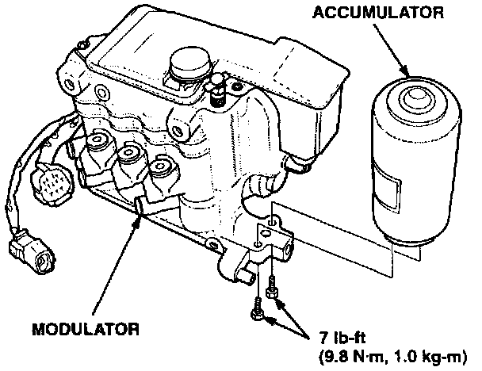
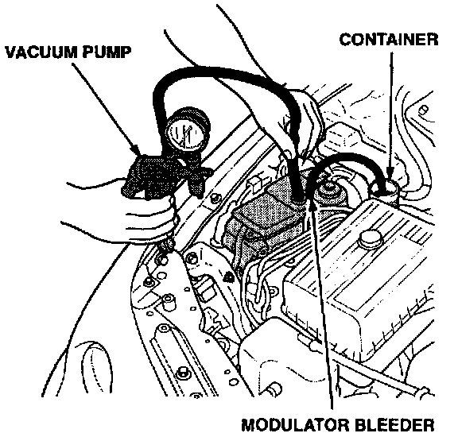

Corrective Action
Replace the accumulator and O-ring with the kit listed under PARTS INFORMATION.1. Remove the air cleaner housing assembly.
2. Relieve the system pressure, Refer to service manual page 19-152 for the proper procedure.
3. Disconnect the 14P and 2P connectors from the modulator.
4. Remove the six brake lines from the modulator.
5. Remove the wire harness clip from the modulator bracket.
6. Remove the three modulator mounting nuts. Remove the modulator from the car.
7. Remove the two mounting bolts and remove the accumulator from the modulator.
NOTE:
Do not place the modulator in a bench vise. You could damage the fittings.
8. Do not release the nitrogen from the accumulator at this time. The accumulator should be stored, fully pressurized, for 30 days for warranty parts call-in. If it is not called in after 30 days, the accumulator should then be depressurized and discarded. [NEW]
9. Install the O-ring on the new accumulator (see PARTS INFORMATION).

10. Install the accumulator on the modulator. Tighten the mounting bolts to 9.8 N-m (7 lb-ft).
11. Install the modulator in the car. Tighten the mounting nuts to 22 N-m (16 lb-ft).
12. Reconnect the brake lines, wire harness clip, and electrical connectors. Tighten the brake lines to 19 N-m (14 lb-ft).
13. Fill the modulator and brake reservoirs with Genuine Honda brake fluid.
14. Bleed the brake system. Refer to service manual page 19-6.
15. Bleed the ABS modulator. Refer to service manual page 19-153.
Modulator Final Bleeding Procedure
16. Connect a piece of 3/8 inch O.D. hose to the pressure side of a hand-held vacuum pump.
17. Remove the filler cap from the modulator reservoir. Leave the plastic insert in the modulator opening.
18. Start the engine. Hold the vacuum pump hose against the modulator opening insert. To pressurize the reservoir, pump the vacuum pump until you feel resistance (1 to 3 strokes).

19. While keeping the reservoir pressurized, have an assistant turn off the engine and then slowly open the modulator bleeder.
20. Close the bleeder when brake fluid stops running into the tube.
21. Repeat steps 18 through 20 five times to purge the air from the modulator.
22. Clear any codes in the ABS control unit memory by removing the ABS B2 fuse in the under-hood ABS fuse box for three seconds.